Prototypage de projets Arduino en utilisant Python et PyQt5
May 1, 2019
Table des matières
Introduction
Python et Arduino
Installation des packages pyserial et pyfirmata
Téléchargez l'IDE Arduino
Exemple 1: Connectez une LED sur un pin (1 à 13)
Montage
Trouver le numéro de port sous Windows
Trouver le numéro de port sur Linux
Le code Arduino
Le code python (avec le module pyserial)
Firmata protocol
Exemple 2: Connectez une LED contrôlée par un signal modulé en largeur d'impulsion (PWM)
Qu'est-ce que le PWM?
Montage
Le code python (avec le module pyfirmata)
Exemple 3: Lecture d'une entrée analogique
Montage 1
Montage 2
Introduction
Arduino (https://www.arduino.cc/) est un microcontrôleur monté avec ses circuits d’entrée/sortie sur une petite carte électronique très pratique. Il est capable de mesurer des tensions, et donc d’acquérir des grandeurs physiques qui auront été traduites en tension électrique, comme un courant électrique, une température, une pression, une accélération, etc.
Figure 1: Arduino Uno Rev3 (https://store.arduino.cc/arduino-uno-rev3).

Il est capable de générer des tensions (avec les voies PWM qui peuvent être utilisées en conversion numérique analogique) et donc de produire une information analogique, qui pourra être exploitée par une interface (un moteur, une LED, un outil). Il peut commander en tout ou rien (ON/OFF) un moteur ou un actionneur une machine ou une LED, par exemple. Et bien sur, il peut effectuer des traitements informatiques et mémoriser des données. Il a le bon goût d’être programmable en C. Son utilisation est très simple : vous chargez sur votre PC (ou Mac) l’IDE gratuit (https://www.arduino.cc/en/Main/Software) qui permet de le programmer, vous branchez la carte Arduino sur l’interface USB de votre PC (ou Mac), vous écrivez votre programme, vous le chargez dans l’Arduino et vous le lancez.
En bref, il permet d’opérer sur le monde physique selon un modèle qui aura été programmé. L’Arduino est petit et simple, mais c’est un modèle presque parfait des systèmes de contrôle/commande de l’industrie. Enfin, signalons que l’Arduino, son hardware et son software sont entièrement libres : vous pouvez le bidouiller ou le reproduire autant que vous voulez, ou même en construire un vous-même !
Le prix : une carte Arduino Uno Rev3 vaut 20 à 25 euros TTC.
L’une des principales limites de l’IDE Arduino est sa capacité limitée à interagir avec l’utilisateur. Vous pouvez imprimer du texte dans une simple zone de texte du moniteur série ou obtenir une saisie de texte de l'utilisateur. Vous pouvez ouvrir un nouveau monde de possibilités en utilisant le langage de programmation python pour interagir avec l'Arduino. Python combiné avec Arduino est une combinaison puissante qui augmentera considérablement le facteur WOW! de vos projets.
Python et Arduino
Python, C ++ et Java sont les langages de programmation les plus couramment utilisés pour apporter une idée novatrice à la réalité. Ce sont tous des langages de programmation très puissants. Récemment, les développeurs d’applications et de logiciels ont libéré la puissance de Python, principalement pour les applications pilotées par les données. Arduino ne fait pas exception à la règle puisque ce microcontrôleur, petit mais puissant, est conçu pour traiter des données en temps réel.Installation des packages pyserial et pyfirmata
Les versions récentes d’Anaconda ne contiennent pas forcement les packages pyserial et pyfirmata dont nous allons avoir besoin pour communiquer avec Arduino.
Installation de package pyserial
Ce module encapsule l'accès pour le port série. Vous pouvez l’installer de différentes manières:
Depuis l’interface Anaconda Navigator (recommandé)
- Cliquer dans la fenêtre d’accueil sur le menu :Environments
- Un menu déroulant en haut de la fenêtre indique par défaut : installed
- Choisir Not installed
- Sélectionner dans la liste le module
pysérial. - Valider pour l’installation.
Figure 2: Installation de package pyserial depuis l'interface Anaconda Navigator.
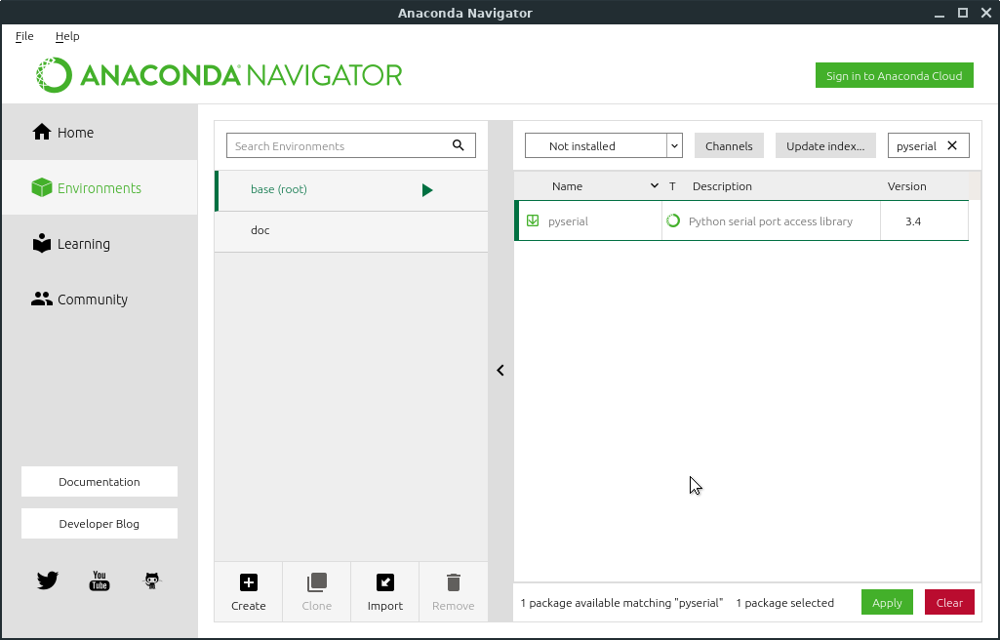
Depuis l’invite commande anaconda ou un terminal ubuntu Utiliser Anaconda Prompt sur Windows ou bien utiliser le terminal sur un MacOS ou Linux. Pour démarrer Anaconda Prompt sous Windows 10, cliquer sur le bouton Démarrer Windows en bas à gauche et sélectionner Anaconda Prompt.
Figure 3: . Lancement d'Anaconda Prompt sous Windows 10.

Entrer l'un des deux commandes d'installation des packages Python:
- commande
conda
conda install pyserial
- ou bien la commande
pip
pip install pyserial
Installation de package pyfirmata
pyfirmata (https://pypi.org/project/pyFirmata/) est une interface Python pour le protocole Firmata (http://firmata.org/wiki/Main_Page).
La méthode d'installation préférée est avec pip:
pip install pyfirmata
Téléchargez l'IDE Arduino
L'étape suivante consiste à télécharger l'Arduino IDE. IDE signifie "Environnement de Développement Intégré". L'IDE Arduino est un programme qui s'exécute sur votre ordinateur et qui permet de modifier le code Arduino. L'IDE Arduino est également utilisé pour compiler et charger du code d'extension.ino sur un Arduino.
Téléchargez l'IDE Arduino en utilisant le lien suivant: https://www.arduino.cc/en/Main/Software
Faites défiler la page jusqu'à la section "Download the Arduino IDE". Choisissez le fichier d'installation correspondant au système d'exploitation que vous utilisez (Windows, Mac OS X ou Linux). Vous pouvez choisir "JUST DOWNLOAD" dans l'écran des dons.
Figure 4: Téléchargez l'IDE Arduino.
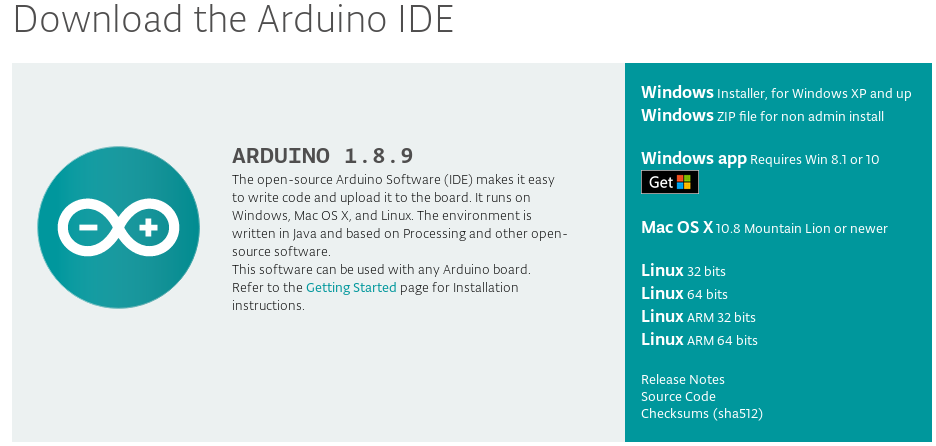
Exemple 1: Connectez une LED sur un pin (1 à 13)
Dans cette section, vous allez apprendre à configurer des communications série entre un Arduino UNO et Python. En utilisant Python, nous allons créer des boutons pour envoyer des commandes à Arduino UNO pour allumer ou éteindre une LED. En retour, l'Arduino répondra par un message de confirmation indiquant que la LED est allumée ou éteinte.Montage
Prenez une LED (de n'importe quelle couleur), une résistance de 220 Ohm, trois câbles de pontage (rouge, jaune et noir), l'Arduino et une plaque de montage. Raccorder la LED, la résistance et les fils de liaison colorés comme indiqué ci-dessous. Notez que la LED a deux "pattes" de tailles différentes. Assurez-vous que la voyant est branchée dans le bon sens. Le courant ne peut circuler que dans un sens par une LED.
Figure 5: Montage Arduino avec une LED et une résistance.
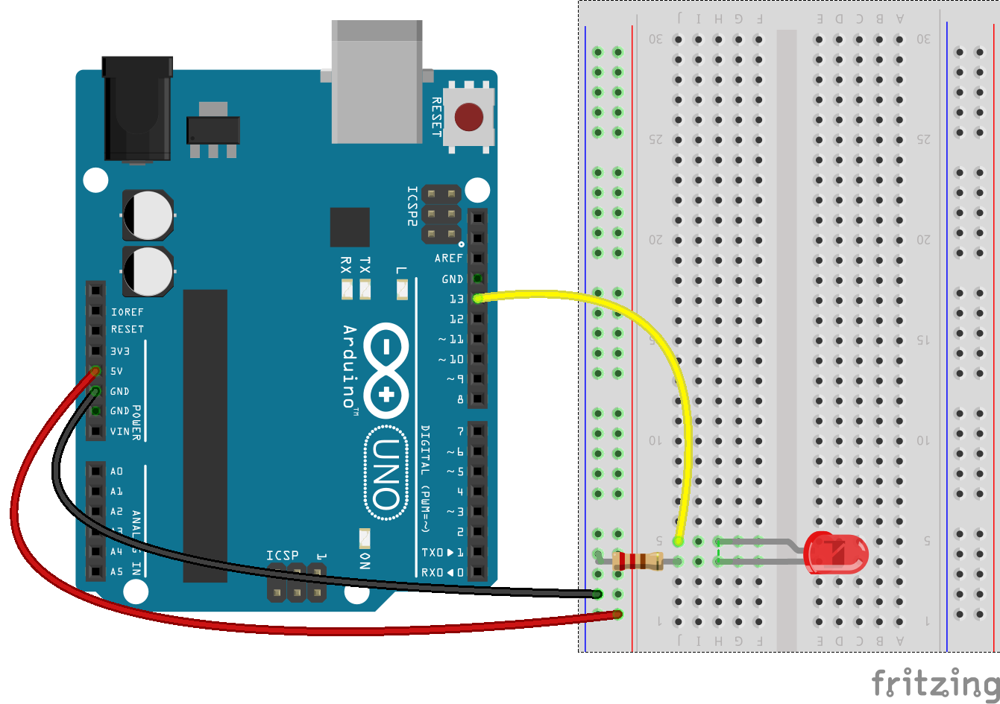
Trouver le numéro de port sous Windows
- Ouvrez le Gestionnaire de périphériques et développez la liste des ports (COM et LPT).
- Notez le numéro sur le port série USB
Figure 6: Numéro de port Arduino sur Windows. Ici c'est COM3
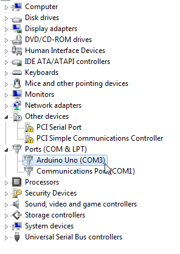
Trouver le numéro de port sur Linux
- Ouvrez le terminal et tapez:
ls/dev/tty* - Notez le numéro de port indiqué pour
/dev/ttyUSB*ou/dev/ttyACM*. Le numéro de port est représenté avec*ici.
Figure 7: Numéro de port Arduino sur Linux. Ici c'est /dev/ttyACM0
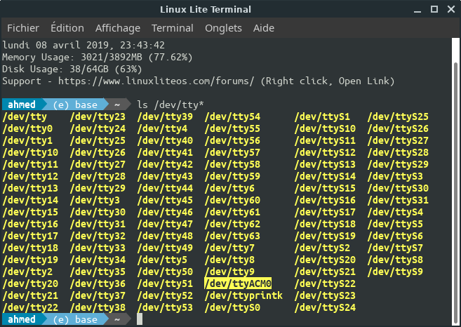
Une astuce pour récupérer votre chemin vers le port série est de regarder dans l’environnement Arduino dans le menu Outils/Port.
Figure 8: Chemin du port série sur une machine Linux dans le menu Outils/Port
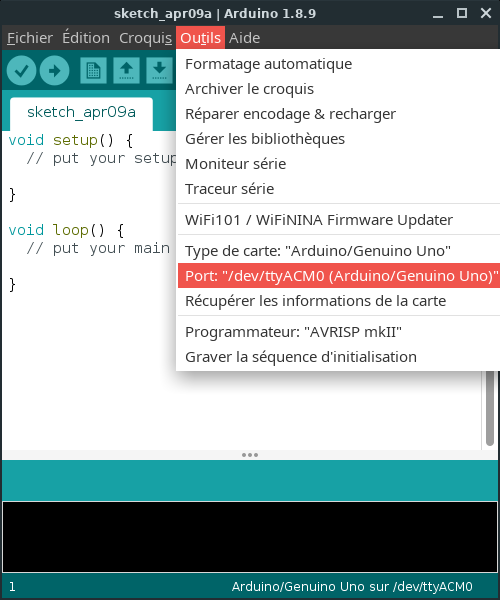
Le code Arduino
Avant de charger le code, assurez-vous d’avoir sélectionné un port COM dans l’option. Ce port COM sélectionné sera utilisé dans le développement, en particulier avec le code python. De plus, nous devrons prendre en compte le débit en bauds (baud rate) utilisé dans le développement.Nous allons d’abord écrire un programme simple pour Arduino. L’idée du programme est la suivante: Arduino UNO, qui est connecté à un ordinateur, recherche les données série et, en fonction des données reçues du port série, allume ou éteint le voyant.
Le programme Arduino pour l’interfaçage d’Arduino avec python est donné ci-dessous.
const int led=13;
int value=0;
void setup()
{
Serial.begin(9600);
pinMode(led, OUTPUT);
digitalWrite (led, LOW);
Serial.println("Connection established...");
}
void loop()
{
while (Serial.available())
{
value = Serial.read();
}
if (value == '1')
digitalWrite (led, HIGH);
else if (value == '0')
digitalWrite (led, LOW);
}
Le code python (avec le module pyserial)
# NOM DU FICHIER:LEDSerial.py
#% IMPORTATION
import serial
# créer un objet de port série appelé Arduino_Serial
Arduino_Serial = serial.Serial('com12',9600)
# lire les données de série et l'afficher en ligne
print(Arduino_Serial.readline())
print("Entrez 1 pour allumée la LED et 0 pour l'éteindre")
# boucle infinie
while 1:
# attend que l'utilisateur entre les données
input_data = input()
# affiche les données pour confirmation
print ("you entered", input_data)
# si la donnée entrée est 1
if (input_data == '1'):
# envoyer 1 Ã arduino
Arduino_Serial.write('1')
print("LED ON")
# si la donnée entrée est 0
if (input_data == '0'):
# envoyer 0 Ã arduino
Arduino_Serial.write('0')
print("LED OFF")
Avertissement
Vous pouvez rencontrer l’erreur suivante lorsque vous exécutez le code python sur votre machine Linux (ou Raspberry) pour la première fois: OSError: [Errno 13] Permission denied: '/dev/ttyACM0'
Pour résoudre ce problème
- modifier les autorisations sur
/dev/ttyACM0afin que "world" dispose des privilèges de lecture et d'écriture (ce que vous ne voudrez peut-être pas faire) - bien que vous puissiez constater qu'ils sont réinitialisés chaque fois que le périphérique est branché, tapez par exemple sur le terminal:sudo chmod 666 /dev/ttyACM0 - Créez une règle dans
/etc/udev/rules.dqui définira les autorisations du périphérique (un redémarrage sera requis):
# navigate to rules.d directory
cd /etc/udev/rules.d
#create a new rule file
sudo touch my-newrule.rules
# open the file
sudo vim my-newrule.rules
# add the following
KERNEL=="ttyACM0", MODE="0666"
Cela définit également des autorisations pour le monde en lecture et en écriture, ce que vous ne voudrez peut-être pas faire.
Solution par: user1063287 sur le site Stack Overflow: https://stackoverflow.com/questions/27858041/oserror-errno-13-permission-denied-dev-ttyacm0-using-pyserial-from-pyth
Chargez le code Arduino sur l’Arduino UNO. Notez le port COM auquel il est connecté. Le même numéro de port COM doit être indiqué dans le code Python.
Après avoir chargé le code sur Arduino, lancez le programme Python sur l'IDE Spyder. La console Ipython va afficher le message "Connexion établie" et "Entrez 1 pour allumée la LED et 0 pour l'éteindre".
Firmata protocol
Vous désirez contrôler des relais à partir d'un ordinateur? Interroger des capteurs afin d'accumuler les données dans un ordinateur (datalogging)? Dans ce genre d'application, où l'Arduino est utilisé comme un périphérique USB plutôt que comme un dispositif autonome, Firmata peut s'avérer très utile.Firmata est un protocole générique permettant la communication entre un microcontrôleur et un logiciel. Dans notre cas, Firmata nous permet de communiquer Arduino avec Python.
Préparation de l'Arduino
Sans grande surprise, votre Arduino doit être branché à l'ordinateur hôte, au moyen d'un câble USB.Nous n'avons pas à installer la bibliothèque Firmata, puisqu'elle est incluse dans l'IDE Arduino. Notre tâche consistera simplement à téléverser dans la carte Arduino l'exemple "StandardFirmata" (Menu Fichier - Exemples - Firmata - StandardFirmata).
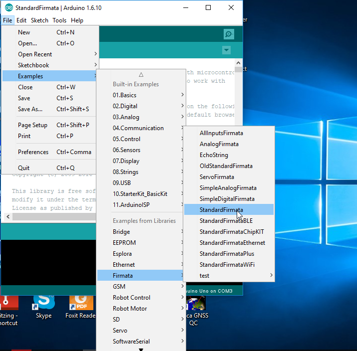
Votre Arduino est maintenant prêt à recevoir des messages en provenance de l'ordinateur, et à les interpréter correctement.
Firmata Test
Un moyen rapide et facile de tester le protocole Firmata immédiatement est de télécharger le programme Firmata Test sur le site Web officiel: http://www.firmata.org/wiki/Main_Page
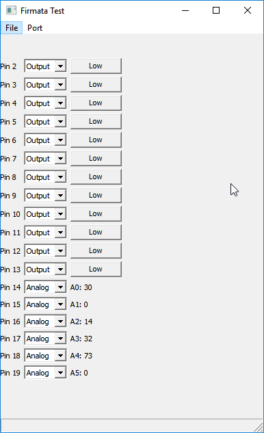
Pour Windows 10, vous pouvez installer Windows Remote Arduino Experience: https://www.microsoft.com/store/apps/9nblggh2041m
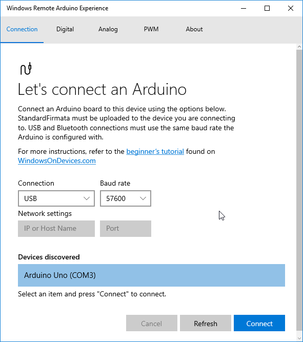
Ces outils nous permet de communiquer facilement et rapidement avec toutes les pins d’Arduino.
Au démarrage, cette application vous demandera de sélectionner le port série correspondant à votre carte Arduino (menu "Port"). Une fois ce port sélectionné, la fenêtre affiche la liste des entrées/sorties de votre Arduino (sauf les pins 0 et 1, qui sont déjà utilisées pour la communication série par USB entre l'ordinateur et la carte).
À partir de ce logiciel, vous pouvez régler individuellement chaque pin de l'Arduino en entrée numérique (Input) ou en sortie (Output). Lorsqu'elles en sont capables, certaines pins peuvent également être réglées en entrée analogique (Analog), pour émettre un signal en modulation de largeur d'impulsion (PWM) ou pour commander un servomoteur (Servo).
- Si vous avez réglé la pin en entrée numérique (Input), son état logique (Low ou High) est affiché.
- Si vous avez réglé la pin en sortie numérique (Output), un bouton vous permet de régler son état logique à Low ou High (par exemple, la LED de la carte Arduino s'allumera si vous réglez la pin 13 à High).
- Si vous avez réglé la pin en entrée analogique (possible pour les pins 14 à 19, qui sont les entrées A0 à A5), leur valeur entre 0 et 1023 est affichée.
- Si vous avez réglé la pin en mode "Servo", un curseur vous permet de régler la position du servomoteur.
- Si vous avez réglé la pin en mode "PWM", un curseur vous permet de régler le rapport cyclique du signal émis.
Dans la prochaine section, nous verrons comment utiliser Firmata dans nos propres programme en Python, qui s'exécuteront sur l'ordinateur.
Le code python (avec le module pyfirmata)
À titre de démonstration, nous allons écrire un programme en Python qui contrôle l'état des sorties numériques de l'Arduino, ce qui aura pour effet d'allumer et d'éteindre une LED (bien entendu, rien ne vous empêche de remplacer les LEDs par autre chose comme, par exemple, des relais).
Nous branchons donc une LED comme indiqué dans la figure 5.
Voici un premier script en Python (LEDBlink.py) qui permet à l'utilisateur de contrôler l'état des LEDs à partir de l'ordinateur auquel est branché l'Arduino:
# NOM DU FICHIER: LEDBlink.py
#% IMPORTATION
import pyfirmata
PIN = 13 # Pin 13 est utilisé
DELAY = 2 # Un délai de 2 secondes
# Vérifiez que le port correspond à votre système, voir exemples ci-dessous:
# Sur Linux: /dev/tty.usbserial-A6008rIF, /dev/ttyACM0,
# Sous Windows: 'COM1', 'COM2', 'COM3'
PORT = 'COM3'
# Creates a new board
board = pyfirmata.Arduino(PORT)
# Boucle pour clignoter la LED
while True:
board.digital[PIN].write(1) # Set the LED pin to 1 (HIGH)
print("LED ON")
board.pass_time(DELAY)
board.digital[PIN].write(0) # Set the LED pin to 0 (LOW)
print("LED OFF")
board.pass_time(DELAY)
Note
Notez que pour que ça fonctionne correctement, vous devez assigner la valeur appropriée à la variable "port". Sous Windows ce sera probablement quelque chose comme "COM3", sous Linux ce sera plutôt "/dev/ttyACM0". Il se peut que vous deviez démarrer l'IDE Arduino pour connaître le nom du port série correspondant à votre Arduino.
Application PyQt5 (avec le module pyfirmata)
Le programme sera beaucoup plus convivial s'il comporte une interface graphique.
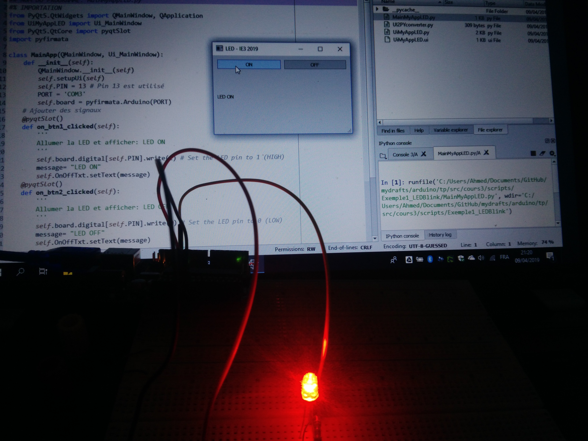
Le script présenté ci-dessous utilise PyQt5, qui semble être la solution la plus répandue pour produire des interfaces graphiques en Python. Nous avons adapté le code python construit dans le chapitre précédent (MainMyApp.py ) en gardant seulement deux boutons pour contrôler la LED via le protocole Firmata de l'Arduino et un widget "Label" pour afficher l'état de la LED.
## NOM DU PROGRAMME: MainMyAppLED.py
#% IMPORTATION
from PyQt5.QtWidgets import QMainWindow, QApplication
from UiMyAppLED import Ui_MainWindow
from PyQt5.QtCore import pyqtSlot
import pyfirmata
class MainApp(QMainWindow, Ui_MainWindow):
def __init__(self):
QMainWindow.__init__(self)
self.setupUi(self)
self.PIN = 13 # Pin 13 est utilisé
PORT = 'COM3'
self.board = pyfirmata.Arduino(PORT)
# Ajouter des signaux
@pyqtSlot()
def on_btn1_clicked(self):
'''
Allumer la LED et afficher: LED ON
'''
self.board.digital[self.PIN].write(1) # Set the LED pin to 1 (HIGH)
message= "LED ON"
self.OnOffTxt.setText(message)
@pyqtSlot()
def on_btn2_clicked(self):
'''
Allumer la LED et afficher: LED OFF
'''
self.board.digital[self.PIN].write(0) # Set the LED pin to 0 (LOW)
message= "LED OFF"
self.OnOffTxt.setText(message)
if __name__ == "__main__":
import sys
app = QApplication(sys.argv)
MainWindow = MainApp()
MainWindow.show()
sys.exit(app.exec_())
Lors de l'exécution de ce script, nous aurons en sortie l'interface graphique suivante qui communiquera avec la LED branchée au pin 13 de notre arduino.
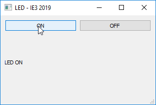
Exemple 2: Connectez une LED contrôlée par un signal modulé en largeur d'impulsion (PWM)
Dans la partie précédente, nous avions vu comment régler l'état des sorties numériques de l'Arduino. Dans cette partie, nous allons contrôler un signal modulé en largeur d'impulsion (PWM).Qu'est-ce que le PWM?
La modulation par largeur d'impulsion (ou pulse Width Modulation, d'où l'acronyme PWM) est une succession de signaux logiques 0 ou 1 (donc 0 V et 5 V dans le cas de l'Arduino). Lorsque le rapport cyclique (duty cycle) est de 0%, le signal est toujours à 0 V. Lorsque le rapport cyclique est de 100%, le signal est toujours à 5 V. Si le rapport cyclique est de 25%, le signal est haut pendant 25% du temps, et bas pendant les 75% restants...
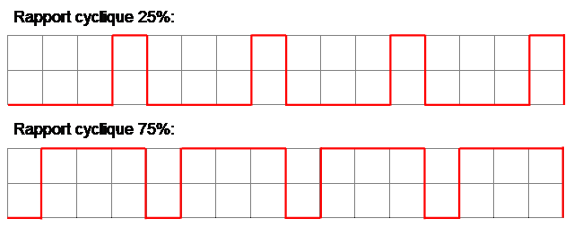
Au moyen d'un filtre passs-bas, un signal PWM peut être transformé en une tension analogique continue dont la valeur se situe entre 0 et 5 V. On peut aussi utiliser un signal PWM pour contrôler la vitesse d'un moteur. Dans cette partie du cours, nous utiliserons le signal PWM pour contrôler la luminosité d'une LED (plus le rapport cyclique sera élevé, plus la lumière émise par la LED sera intense).
Montage
Le circuit sera évidemment très simple: une LED et une résistance de protection (220 ohms, par exemple), reliée à une des pins PWM de l'Arduino (3, 5, 6, 9, 10, 11 sur l'Arduino Uno). Les scripts présentés ci-dessous supposent que la LED est branchée à la pin 11.
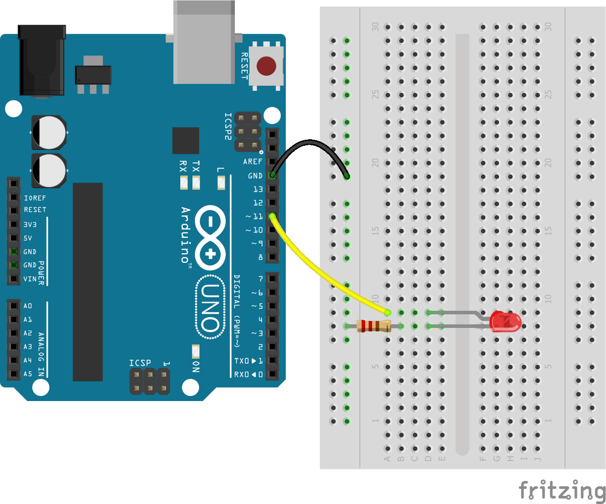
Le code python (avec le module pyfirmata)
Nous supposons que le sketch "StandardFirmata" a été téléversé dans votre Arduino, et que la bibliothèque pyFirmata a déjà été installée sur votre ordinateur.
L'utilisation du PWM avec pyfirmata nécessite deux étapes:
- Le réglage d'une pin de l'Arduino en mode PWM, au début du programme, au moyen de la méthode
get_pin():
LEDpin = board.get_pin('d:11:p')
Nous créons un objet de type PIN nommé LEDpin. Les arguments de get_pin() indiquent que la pin numérique numéro 11 est en mode PWM (le "d" est pour "digital" et le "p" est pour "PWM").
- Le réglage du rapport cyclique du signal PWM, chaque fois qu'on désire le modifier:
board.digital[LEDpin.pin_number].write(rapport_cyclique)
Le rapport cyclique doit être un nombre se situant entre 0 (rapport cyclique de 0%) et 1 (rapport cyclique de 100%). Par exemple, pour émettre sur la pin numéro 5 un signal PWM dont le rapport cyclique sera de 30%, on pourrait écrire:
board.digital[5].write(0.3)
Premier exemple de script (interface en mode texte)
Dans ce premier exemple, l'utilisateur doit écrire un nombre (entre 0 et 100) pour régler le rapport cyclique (et, par conséquent, la luminosité de la LED).
# NOM DU FICHIER:LED_PWM.py
#% IMPORTATION
import pyfirmata
port = 'COM3' #windows
#port = '/dev/ttyACM0' #linux
board = pyfirmata.Arduino(port)
LEDpin = board.get_pin('d:11:p') ## d = digital, 11 = numéro de la pin, p = PWM
print("-------------- CONTROLE DE LEDS ----------------")
print("En tout temps, vous pouvez quitter le programme en répondant par 'q'.")
while True:
print("Luminosité désirée pour la LED:")
luminosite = input("De 0 Ã 100 (ou q): ")
if (luminosite == 'q'):
board.exit();
print("Au revoir!")
break;
board.digital[LEDpin.pin_number].write(float(luminosite)/100.0)
Lors de l'exécution de ce script, l'utilisateur peut saisir un texte pour contrôler la luminosité de la LED, comme suit:
-------------- CONTROLE DE LEDS ----------------
En tout temps, vous pouvez quitter le programme en répondant par 'q'.
Luminosité désirée pour la LED:
De 0 à 100 (ou q): 100
Luminosité désirée pour la LED:
De 0 à 100 (ou q): 50
Luminosité désirée pour la LED:
De 0 à 100 (ou q): q
Au revoir!
Deuxième exemple de script (interface graphique PyQt5)
Même principe que nous avons utilisé dans Application PyQt5 (avec le module pyfirmata), nous allons adapté le code python construit dans le chapitre précédent (MainMyApp.py) mais en gardant le curseur ( le widget Slider) pour contrôler la luminosité de la LED via le protocole Firmata de l'Arduino et un widget "LCD display" pour afficher le pourcentage de luminosité désirée pour la LED.
Le code python principal dans ce cas deviendra,
## NOM DU PROGRAMME: MainMyAppLED_PWM.py
#% IMPORTATION
from PyQt5.QtWidgets import QMainWindow, QApplication
from UiMyAppLED import Ui_MainWindow
from PyQt5.QtCore import pyqtSlot
import pyfirmata
class MainApp(QMainWindow, Ui_MainWindow):
def __init__(self):
QMainWindow.__init__(self)
self.setupUi(self)
PORT = 'COM3'
self.board = pyfirmata.Arduino(PORT)
self.LEDpin = self.board.get_pin('d:11:p')
## d = digital, 11 = numéro de la pin, p = PWM
# Ajouter des signaux
@pyqtSlot(int)
def on_pwm_valueChanged(self, value):
'''
mettre à jour la valeur
'''
self.board.digital[self.LEDpin.pin_number].write(value/100.0)
self.lcd.display(value)
if __name__ == "__main__":
import sys
app = QApplication(sys.argv)
MainWindow = MainApp()
MainWindow.show()
sys.exit(app.exec_())
Lors de l'exécution de ce script, nous aurons en sortie l'interface graphique suivante qui communiquera avec la LED branchée au pin 11 de notre arduino.
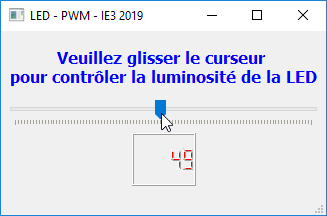
Exemple 3: Lecture d'une entrée analogique
Dans cette partie nous lisons les entrées analogiques de l'Arduino en utilisantpyfirmata.
Montage 1
Pour tester le principe, le plus simple est de brancher un potentiomètre à l'entrée A0 de l'Arduino. Bien sûr, ce potentiomètre peut être remplacé par n'importe quel capteur analogique (photorésistance, thermistance, etc.).
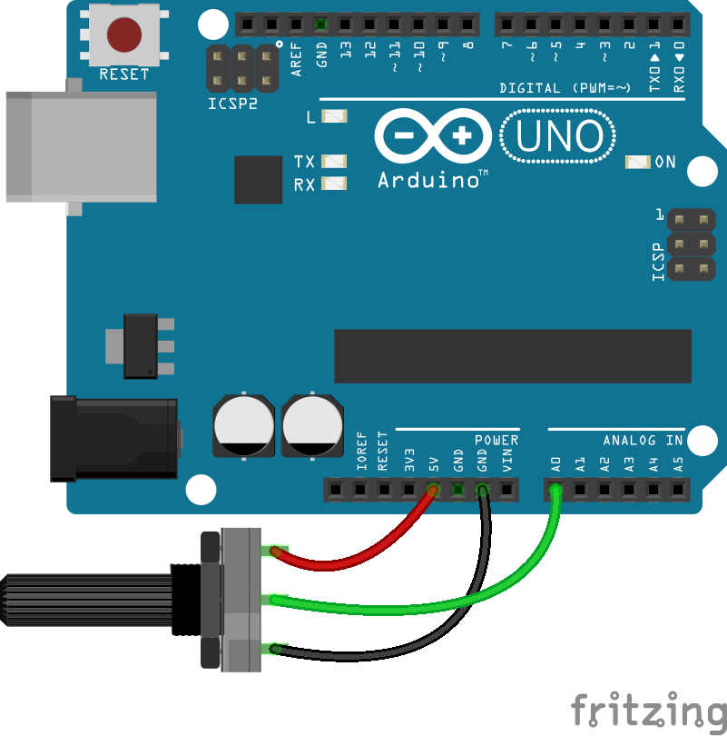
Avec pyfirmata, la lecture d'une pin analogique est presque identique à la lecture d'une pin numérique. La principale différence réside dans la définition de la pin:
pinA0 = board.get_pin('a:0:i')
Note
Nous utiliserions "i" à la place de "a" s'il s'agissait d'un signal numérique.
read() pour lire la valeur.
pinA0.read()
Avertissement
read() retourne une valeur décimale entre 0 et 1 (alors qu'en langage Arduino, analogRead() retourne un entier entre 0 et 1023).
it = pyfirmata.util.Iterator(board)
it.start()
Premier exemple de script (interface en mode texte)
Ce programme plutôt minimaliste se contente de lire la valeur de l'entrée A0 une fois par seconde et de l'afficher à l'écran.
# NOM DU FICHIER: AnalogRead.py
#% IMPORTATION
import pyfirmata
import time
port = 'COM3' #windows
#port = '/dev/ttyACM0' #linux
board = pyfirmata.Arduino(port)
it = pyfirmata.util.Iterator(board) # itérateur permet de ne pas engorger
# la communication série
it.start()
pinA0 = board.get_pin('a:0:i') # a = analogique, 0 = numéro de la pin, i = input.
print('#-----------------------------')
print("# Lecture de l'entrée analogique A0 de l'Arduino ")
print('#-----------------------------')
while True:
try:
time.sleep(1) # Pause d'une seconde avant la prochaine mesure
print(pinA0.read()) # la valeur varie entre 0 et 1.
except KeyboardInterrupt:
board.exit()
break
Note
L'instruction "Exception" à l'intérieur de la boucle:
try:
time.sleep(1) # Pause d'une seconde avant la prochaine mesure
print(pinA0.read()) # la valeur varie entre 0 et 1.
except KeyboardInterrupt:
board.exit()
break
est une astuce utilisée pour arrêter la communication avec Arduino (board.exit()) et pour éviter les erreurs lors de l'arrêt forcé du programme.
Lors de l'exécution de ce script, l'utilisateur peut lire la valeur du potentiomètre (de 0 à 1) toutes les secondes et le modifier en tournant le potentiomètre branché sur l'Arduino.
#-----------------------------
# Lecture de l'entrée analogique A0 de l'Arduino
#-----------------------------
1.0
1.0
0.7478
0.6989
0.6393
0.5806
0.3822
0.2219
0.0929
0.0
0.0
0.3324
0.3324
0.3324
Deuxième exemple de script (sauvegarder les données dans un fichier texte)
Dans le script suivant, nous allons enregistrer les valeurs du potentiomètre dans un fichier texte (Data.txt) que nous créons dans le même répertoire que le script python:
# NOM DU FICHIER: AnalogReadData.py
#% IMPORTATION
import pyfirmata
import time
port = 'COM3' #windows
#port = '/dev/ttyACM0' #linux
board = pyfirmata.Arduino(port)
it = pyfirmata.util.Iterator(board) # itérateur permet de ne pas engorger
# la communication série
it.start()
pinA0 = board.get_pin('a:0:i') # a = analogique, 0 = numéro de la pin, i = input.
# Nom du fichier à écrire
filename = "Data.txt"
# Ouvrir le fichier avec une permission d'écriture
myfile = open(filename, 'w')
# Ecrire une ligne dans le fichier
myfile.write("# Lecture de l'entrée analogique A0 de l'Arduino \n")
while True:
try:
time.sleep(1) # Pause d'une seconde avant la prochaine mesure
valeur = pinA0.read() # la valeur varie entre 0 et 1.
print(valeur)
myfile.write(str(valeur) + "\n") # écrire la valeur dans le fichier
# et retourner à la nouvelle ligne
except KeyboardInterrupt:
board.exit()
myfile.close()
break
Ensuite, nous écrivons un autre script python pour tracer les données stockées dans le fichier Data.txt que nous avons créé précédemment:
# NOM DU FICHIER: PlotData.py
#% IMPORTATION
import numpy as np
import matplotlib.pyplot as plt
pData = np.loadtxt("Data.txt", comments = "#")
fig = plt.figure()
plt.plot(pData, "-r*")
plt.xlabel("Temps [s]")
plt.ylabel("Valeurs du potentiomètre")
plt.grid()
plt.show()
Lors de l'exécution de ce script, nous aurons la figure suivante:
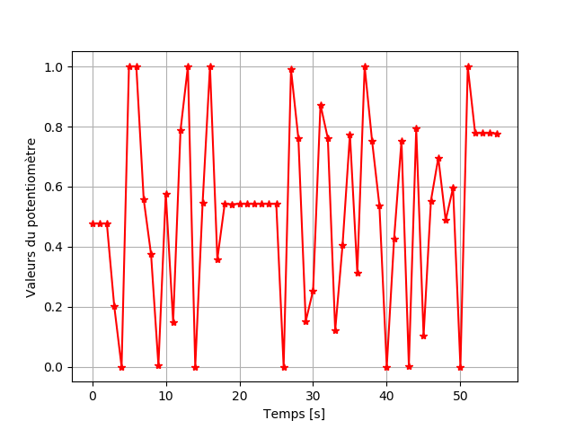
Montage 2
Dans ce montage, nous allons contrôler par un potentiomètre (pin A0) la luminosité d'une LED branchée dans un pin PWM (pin 11).
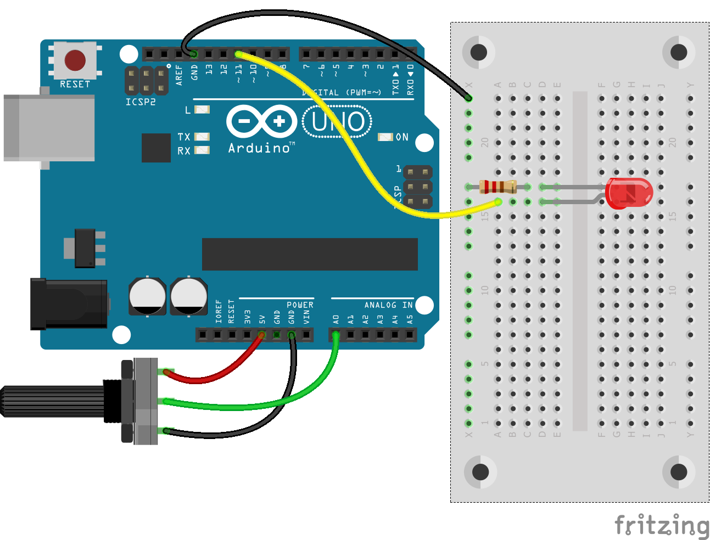
Premier exemple de script (interface en mode texte)
# NOM DU FICHIER: AnalogReadPWM.py
#% IMPORTATION
import pyfirmata
import time
port = 'COM3' #windows
#port = '/dev/ttyACM0' #linux
board = pyfirmata.Arduino(port)
it = pyfirmata.util.Iterator(board) # itérateur permet de ne pas engorger
# la communication série
it.start()
pinA0 = board.get_pin('a:0:i') # a = analogique, 0 = numéro de la pin, i = input.
LEDpin = board.get_pin('d:11:p') # d = digital, 11 = numéro de la pin, p = PWM
print('#-----------------------------')
print("# Lecture de l'entrée analogique A0 de l'Arduino ")
print('#-----------------------------')
while True:
try:
time.sleep(1) # Pause d'une seconde avant la prochaine mesure
valeur = pinA0.read() # la valeur varie entre 0 et 1.
print(valeur)
board.digital[LEDpin.pin_number].write(valeur)
except KeyboardInterrupt:
board.exit()
break
Deuxième exemple de script (tracer de données en temps réel)
Tracer des données série depuis Arduino est un besoin courant. Dans le script suivant, nous allons vous montrer comment utiliser la bibliothèque pythonmatplotlib pour effectuer cette tâche.
# NOM DU FICHIER: AnalogReadPWM_RealTimePlot.py
#% IMPORTATION
import pyfirmata
import time
import matplotlib.pyplot as plt
port = 'COM3' #windows
#port = '/dev/ttyACM0' #linux
board = pyfirmata.Arduino(port)
it = pyfirmata.util.Iterator(board) # itérateur permet de ne pas engorger
# la communication série
it.start()
pinA0 = board.get_pin('a:0:i') # a = analogique, 0 = numéro de la pin, i = input.
LEDpin = board.get_pin('d:11:p') # d = digital, 11 = numéro de la pin, p = PWM
# Préparer la figure (matplotlib)
plt.ion() # Activer le mode interactif
fig = plt.figure() # créer une figure
pData = [0] * 25 # initiliser par une liste de 25 valeurs = 0
l1, = plt.plot(pData, "-r*") # tracer les pData initialement des 0
plt.ylim((-0.1, 1.1))
plt.grid()
i = 0
while True:
try:
time.sleep(1)
valeur = pinA0.read()
i +=1
print("Temps = %s s; valeur = % s " %(i, valeur))
pData.append(valeur) # ajouter la valeur à la fin de la liste
del pData[0] # effacer le premier éliment de la liste
# update plot
l1.set_xdata([i for i in range(25)])
plt.pause(0.0001) # assurez-vous de faire une pause sinon il va planter
l1.set_ydata(pData)
plt.pause(0.0001) # assurez-vous de faire une pause sinon il va planter
plt.title("Potentiomètre en temps réel (t = %s s)"%i)
plt.draw()
board.digital[LEDpin.pin_number].write(valeur)
except KeyboardInterrupt:
board.exit()
break
La sortie de ce code python sera une animation matplotlib.
Analog plot (matplotlib/pyfirmata).
Troisième exemple de script (tracer de données en temps réel avec PyQt5 et pyqtgraph)
Note
Pour lancer les exemples de la librairie pyqtgraph, exécuter le code suivant:
import pyqtgraph.examples
pyqtgraph.examples.run()
Une interface graphique se lancera et vous guidera dans les différents exemples de la bibliothèque:
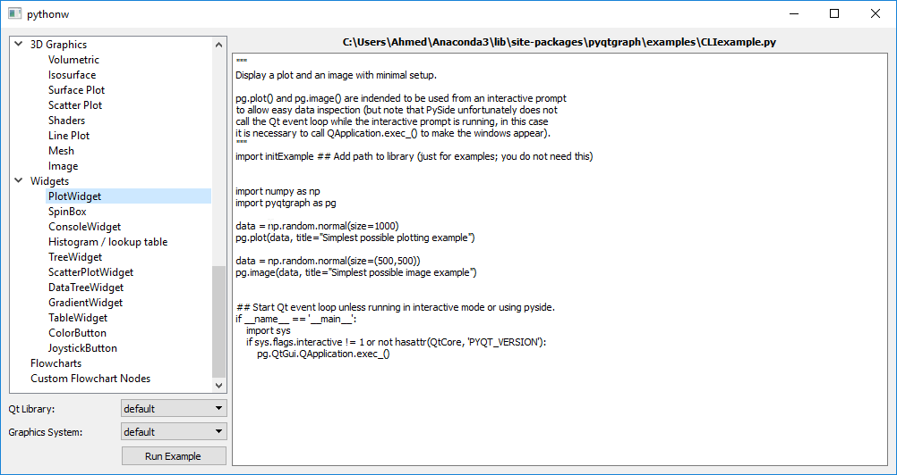
PyQt5-Demo #3 (pyqtgraph/PlotWidget)
## NOM DU PROGRAMME: MainMyAppAnalog.py
#% IMPORTATION
from PyQt5.QtWidgets import QMainWindow, QApplication
from UiMyAppAnalog import Ui_MainWindow
from PyQt5.QtCore import QTimer
import pyfirmata
import pyqtgraph
import time
class MainApp(QMainWindow, Ui_MainWindow):
def __init__(self):
QMainWindow.__init__(self)
self.setupUi(self)
port = 'COM3' #windows
#port = '/dev/ttyACM0' #linux
self.board = pyfirmata.Arduino(port)
it = pyfirmata.util.Iterator(self.board) # itérateur permet de ne pas engorger
# la communication série
it.start()
self.pinA0 = self.board.get_pin('a:0:i') # a = analogique, 0 = numéro de la pin, i = input.
self.LEDpin = self.board.get_pin('d:11:p') # d = digital, 11 = numéro de la pin, p = PWM
self.pyqtgraph.plotItem.showGrid(True, True, 0.7)
self.pData = [0] # initiliser la valeur du potentiometre par 0
self.p1= self.pyqtgraph.plot(self.pData)
self.update()
def update(self):
'''
mettre à jour la valeur
'''
time.sleep(1)
valeur = self.pinA0.read()
self.lcd.display(valeur)
self.board.digital[self.LEDpin.pin_number].write(valeur)
self.pData += [valeur] # Ajouter la valeur du potentimetre à chaque mis à jour
pen=pyqtgraph.mkPen(color="r",width=3)
self.p1.setData(self.pData, pen=pen)
QTimer.singleShot(10, self.update) # QUICKLY repeat
if __name__ == "__main__":
import sys
app = QApplication(sys.argv)
MainWindow = MainApp()
MainWindow.show()
sys.exit(app.exec_())
Analog plot (PyQt5+pyqtgraph/pyfirmata)